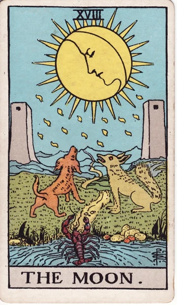
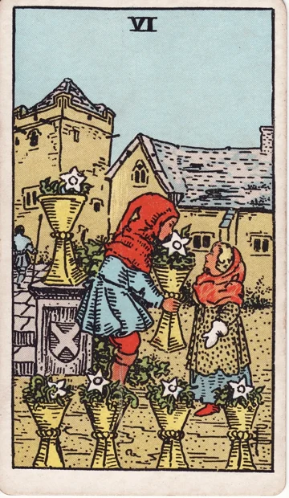

THE FIRST RECORD무료
나의 마음, 세 장의 기록
먼저 고른 세 장을 모두 열고,
각 카드의 해석과 연결된 이야기를 들어요
- 세 장의 카드와 자리별 해석
- 카드 조합으로 읽는 가까운 흐름
- 지금 가져갈 작은 행동 조언
A QUIET NIGHT, A LITTLE CLOSER TO YOU
오늘도, 마음에 남은 사람이 있나요?
누구에게도 쉽게 꺼내지 못한 이야기
오늘 밤은 연화에게 조금 내려놓아도 괜찮아요
회원가입 없이 · 세 장의 무료 리딩 · DEMO
연화 緣花
“왔구나 오늘은 어떤 마음으로 여기까지 왔어?”NOT AN ANSWER A MOMENT FOR YOUR HEART
연의기록은 카드를 펼치기 전에, 먼저 마음을 들어요
정해진 답을 찾기보다 지금의 마음을 조금 더 선명하게
한 번의 상담이 하나의 기록으로 남을 수 있도록
THE WAY WE MEET
폼을 채우는 대신, 이야기를 나눠요
마음이 준비되면 카드는 네가 골라요
연화의 짧은 질문에 답하고,
전하고 싶은 사연을 편하게 남겨요
“그럼 네가 제일 궁금한 건 뭐야?”
78장 중 마음이 닿는 세 장
공개 전에는 다시 골라도 괜찮아요
나의 마음, 상대와 상황, 가까운 흐름
세 장을 연결해 지금을 돌아봐요
네가 지키고 싶은 마음의 기준은 뭘까


THREE CARDS, ONE STORY
달 한 장이 아니라, 네 마음의 자리에 놓인 달
혼자 있을 때와 다른 카드 곁에 있을 때,
조금 달라지는 이야기를 함께 살펴봐요
“그립다는 마음과,내 세 장은 어떤 이야기일까
다시 시작할 준비가 됐다는 건
조금 다른 이야기일 수 있어”리딩 예시 · 연화
GO AS DEEP AS YOU FEEL
조금 더 깊이 보고 싶을 때
연의기록을 팔로우하고 다음 이야기를 함께 봐요
연의기록 ㅣ 연화의 타로상담 ↗
세 장의 리딩은 바로 무료로 볼 수 있어요 심화 다섯 장은 Threads 팔로우 후 자율 참여로 이어볼 수 있어요
A NOTE FROM YEONHWA
“카드가 네 결정을 대신하지는 않아
네가 겪은 일과, 지키고 싶은 마음을
가장 먼저 믿어줘”
미래를 단정하거나 상대의 속마음을 확정하지 않아요
연의기록은 당신의 선택을 위한 조용한 관점을 건넵니다
BEFORE YOU COME IN
아니요 이름이나 연락처 없이 바로 시작할 수 있어요 짧은 질문에 답하고, 사연은 원하는 만큼만 남겨주세요
네 연의기록 Threads를 팔로우한 뒤 돌아와 ‘팔로우했어요’를 누르면 다섯 장의 심화 상담까지 무료로 이어져요 팔로우 여부를 자동 검증하지 않는 자율 참여 방식이에요 댓글은 상담이 좋았다면 자유롭게 남겨주세요
심화 상담을 모두 마치면 질문과 여덟 장의 전체 해석을 텍스트 파일로 내려받을 수 있어요 서버 보관이나 계정별 재열람은 지원하지 않으니, 새로고침 전에 저장해주세요
현재는 카드별 상징, 자리, 카드 조합을 반영하는 데모용 해석 규칙으로 읽어요 실시간 전문가 상담이나 자격 보유자의 검수 결과를 제공하는 서비스는 아니에요
WHENEVER YOUR HEART IS READY
잘 정리된 이야기가 아니어도 괜찮아요
연의기록 데모 시작하기 회원가입 없음 · 실제 결제 없음